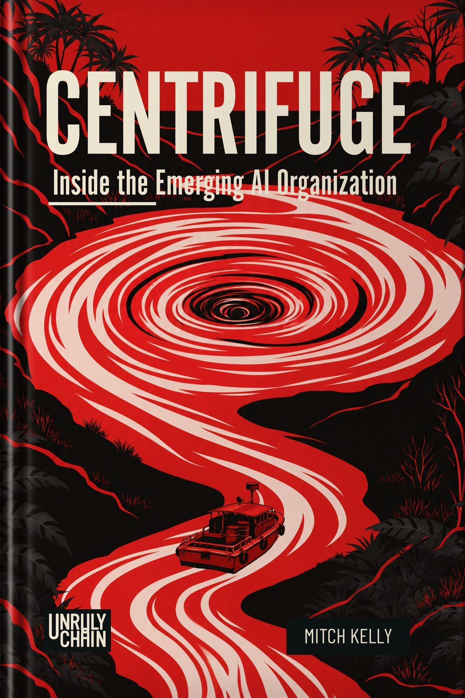

Centrifuge
AI does not merely make organizations faster. It exposes what they actually are.

About the book
The emerging AI organization
Centrifuge argues that AI does not transform organizations merely by making existing work faster. It applies force. Under that force, authority, judgment, memory, capability, and accountability separate from the structures that once held them together.
That separation exposes what an organization actually knows, where decisions really happen, which roles create value, and which existed because coordination used to be expensive. The emerging AI organization is not simply more productive. It can require less organization to carry the same capability.
As execution becomes abundant, scarcity moves. Judgment, taste, direction, context, and the willingness to own a decision become more valuable, not less.
Available now in paperback and ebook. Read the introduction below.
AI as centrifuge
AI applies force that reveals differences already present. It does not create an organization’s fractures; it makes them visible.
Capability moves
Tools increasingly carry capabilities once assembled across roles, teams, and layers. That changes how much organization is required to act.
Scarcity moves too
As execution becomes abundant, judgment, taste, direction, context, and accountability become the differentiators.
From the book
Read the introduction
Read the introduction
Centrifuge
Inside the Emerging AI Organization
Introduction
“Nature loves to reuse patterns.”
Dr. Giri said this to me with his usual knowing smile, and to be fair, it was not the first clever thing he ever said to me. But maybe it was the stickiest. Now a Distinguished Professor in Computer Science, still at Florida International University, Giri Narasimhan’s tutelage guided me into the world of academic research. What he meant by the observation was specific. Mathematical structures that solved a problem in one domain kept appearing in biological systems solving an analogous problem in another. Not because someone had copied the solution across, but because similar constraints tend to produce recognizably similar responses.
I went back to school at thirty-nine, after military service and a career in government and technology. I arrived in Giri’s research group carrying the particular confidence of someone who had done hard things and the particular ignorance of someone who did not yet understand what he was looking at. One project that informed my future thinking involved protein substructures: recurring three-dimensional arrangements that appear across different proteins and often perform related functions. A protein might fold into a particular shape at one location, and an entirely different protein might contain a recognizably related arrangement, because the functional problem that each arrangement solves is structurally similar. We were building algorithms to discover those recurring arrangements automatically, to identify them computationally across the tens of thousands of structures accumulating in the Protein Data Bank.
The method worked by treating each amino acid in a protein as a reference frame for everything around it. The thought experiment is to imagine standing on the surface of a planet and looking up at the night sky. You see constellations, patterns in the stars that depend on where you stand. Travel to a different planet, and the sky changes. But from a particular vantage point on that second planet, you might recognize a constellation from home. Not because the stars moved, but because you found the angle at which the arrangement becomes visible again. Our algorithm searched for those matching arrangements, systematically rotating each protein through reference frames and flagging the moments when recognizable structure emerged from an unfamiliar context.
The work reminded me of something about observation that turned out to be more durable than the algorithms themselves. Training yourself to see recurring structure is a specific kind of skill. You learn to look past the surface of a system and ask whether the arrangement underneath resembles something you have encountered before. When the answer is yes, you have a hypothesis. Not a conclusion. A hypothesis.
The distinction matters because the skill has an obvious failure mode. It is the epistemic version of the old hammer-and-nail problem. When all you have is a hammer, everything looks like a nail. When you have spent years training yourself to recognize recurring patterns, you can start finding them because you are looking for them rather than because they are there. A shape that looks familiar from one vantage point might not survive closer inspection. The resemblance might be superficial. It might be coincidental. It might be an artifact of the lens you brought to the observation rather than a property of the thing you are observing.
The discipline that Giri’s work instilled was not simply to recognize the pattern. It was to test the recognition. A matching constellation in the Protein Data Bank was a candidate, not a finding. It triggered a verification process, additional methods that confirmed whether the match was genuine or whether the resemblance dissolved under scrutiny. The habit of seeing recurring structure was inseparable from the habit of doubting what you saw.
I carried both habits forward.
The protein work was not the only research that shaped how I think. Working with Giri’s group, I led a study examining microbial communities in the human respiratory tract. The question was whether bacterial populations that colonize the same environment organize themselves into recognizable network structures. They do. Groups of species tend to co-occur, forming what we described as clubs (after abandoning the working term gangs for reasons that become obvious when you imagine the conference presentation). Other groups tend to avoid each other, forming rival structures. The analysis also identified structurally central members within certain clusters, species whose correlation patterns suggested they might play an organizing role. The vocabulary we used borrowed from social science, because the structures in the microbial data resembled structures that researchers in entirely different fields had described in human communities.
The protein substructure research contributed to an NSF fellowship. More importantly for what follows, the two research programs left me with related but distinct habits of observation. The protein work trained me to recognize recurring structure, to notice when an arrangement in one system resembled an arrangement in another, and to test whether the resemblance survived inspection. The microbial work trained me to think in networks, to attend to the relationships among components and ask what organization emerges from their interactions that would be invisible if each component were studied alone. By the time I left the laboratory, both habits were deeply set.
I had also learned not to trust either one automatically.
Years later, I was building an AI-enabled advisory practice and not thinking about protein substructures at all. The work was practical: knowledge architecture, governance design, strategy, operational infrastructure. I used AI tools as intensively as I could, which meant I was also the subject of my own investigation. I lived inside the environment I was studying.
I started publishing articles along the way. Not because I had a thesis to advance, but because the observations kept being strange enough to write down. Concepts and interpretations developed over time, but they followed the experience rather than directing it. I was building, and writing about what building revealed.
And certain structures started looking familiar.
As context accumulated, it changed what emerged from my interactions with AI in ways that resembled processes I had encountered in biology. The way independent practitioners kept arriving at similar architectural solutions, without coordinating, activated the same investigative instinct the laboratory had trained. Something that looks like a recurring pattern is worth investigating. It is not automatically worth believing.
Each resemblance raised the same question I had been trained to ask. Was the similarity real? Was it produced by a shared underlying constraint, the way similar protein arrangements emerge in different molecules because the functional problem is the same? Or was I seeing a pattern because my background had taught me to see patterns, and the resemblance was in my observation rather than in the structure?
Other practitioners are reporting observations that parallel mine. A growing number of people building seriously with AI describe the sense that something structural is happening inside their organizations and their own professional cognition. Whether that shared sense reflects independent convergence around a genuine phenomenon, or whether shared tools and shared information are producing shared impressions without shared evidence, is a question worth taking seriously before assuming the answer. I had to take it seriously about my own work before asking anyone else to examine it.
It is offered with the understanding that recognizing a pattern and confirming a pattern are different acts, and that the reader’s job is the same as the researcher’s: to test the resemblance rather than accept it.
This book is not a universal study of AI and organizations. It is a record of one practitioner’s experience, supplemented by client work and outside research but grounded in a single environment that happened to be particularly observable.
I built much of the architecture myself. I used the systems daily. Feedback was immediate. When something failed, I could see the failure within days rather than quarters. When a pattern emerged, I could examine the architecture and the accumulated context behind it rather than inferring from summaries. Corrections accumulated in real time. The reasoning engines could be changed and the effects observed.
I am offering this book as a reference case. One practitioner’s experience, examined in depth, presented for comparison. The method is the one I learned in protein research. Take a new structure. Rotate it against a reference. See where the arrangements align, and see where they do not. Where the patterns I describe resemble what you are encountering in your own work, the resemblance is worth investigating further. Where they differ from your experience, the difference is equally informative. Agreement and disagreement both tell you something about the system you are studying.
The systems that generated the observations in this book are not speculative. They are production tools that practitioners use every day. They influence how problems get framed. They participate in professional judgment in ways that are not always visible to the people relying on them. They can expand capability while creating dependencies that are difficult to recognize as they form.
The interesting question is not only what these tools can do for us. It is what happens to practitioners, and to the organizations those practitioners work inside, during the process of learning to work with systems that increasingly participate in cognition itself. That is a question about the present, not the future. It does not require a more powerful model or a longer timeline. The effects are already observable, in workplaces and practices that have adopted AI tools seriously enough for the consequences to surface.
In my own daily work with these systems, something felt different from what I expected, and I could not immediately tell whether the strangeness was in the tool or in me.
Excerpted from Centrifuge: Inside the Emerging AI Organization.
Copyright © 2026 Mitch Kelly. All rights reserved.
Published by Unruly Chain.
No part of this book may be used to train artificial intelligence systems without the publisher’s written permission.
Get publication updates